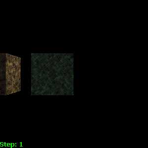
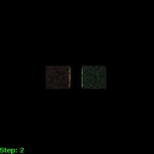
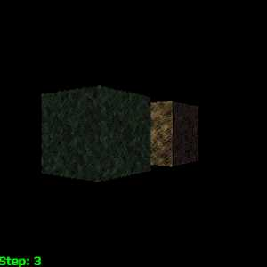

|
|
What You Should See:
This test checks the camera by moving its position relative to two objects in the scene (shown below).
- Step 1: The camera will move to the left, then to right, and finally back to the center.

- Step 2: The camera will move backward, away from the objects, then return to the original position.

- Step 3: The camera will rotate around the objects in the z-plane, always keeping the object in view (the objects will appear to rotate).

|
|